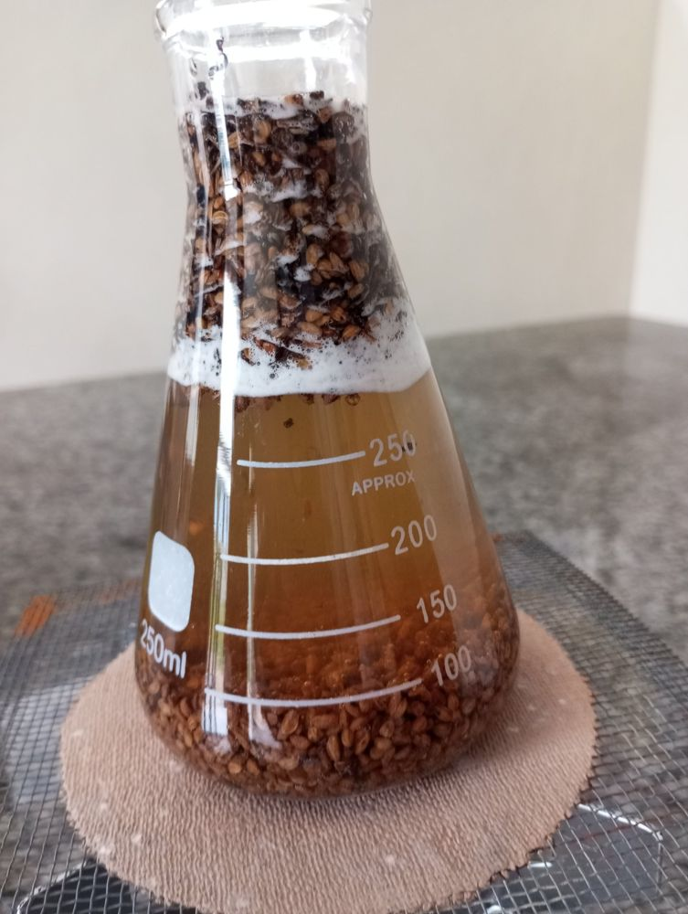
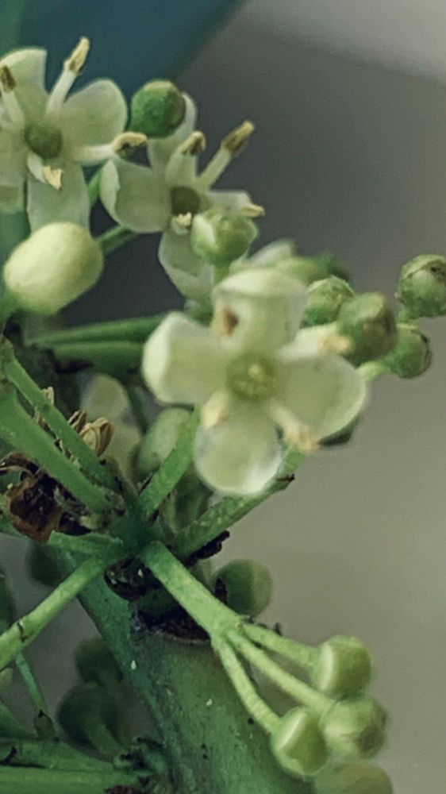
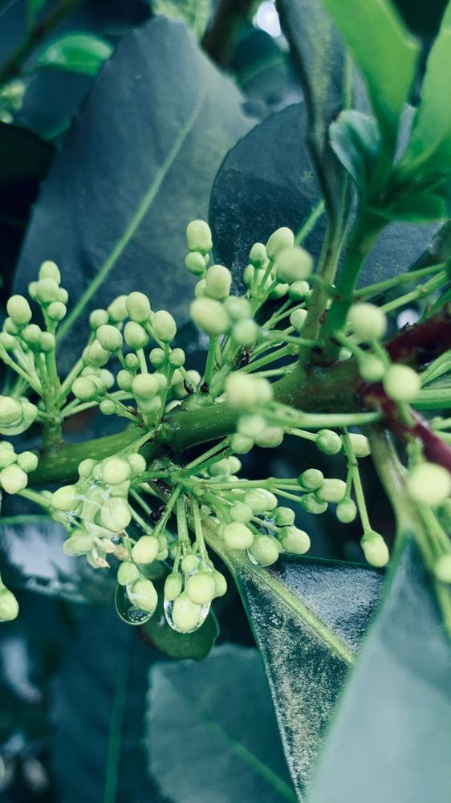
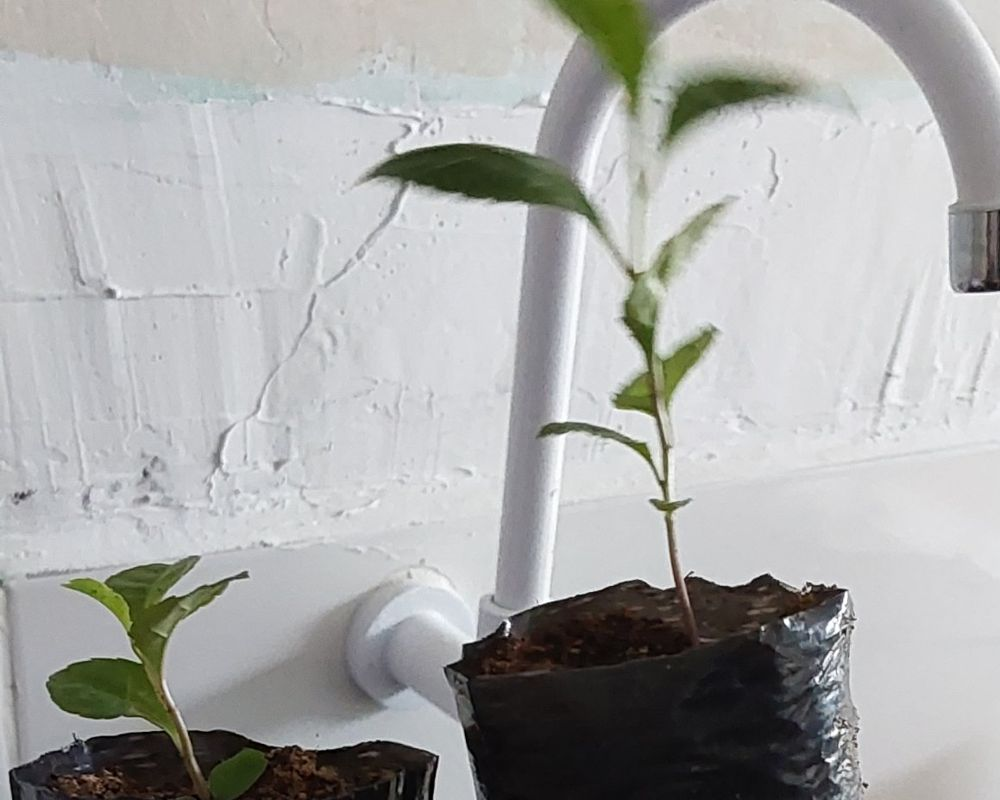

Colégio Estadual do Campo Professor Eugênio de Almeida
Ensino Fundamental, Médio e Técnico
Distrito de Fluviópolis • São Mateus do Sul • Paraná
Produção de Erva-Mate
Produção de Mudas
Antes do chimarrão, um berço. Toda cuia de chimarrão começa num viveiro, onde a muda de erva-mate (Ilex paraguariensis) passa os primeiros meses de vida. Ali, cada muda mora numa espécie de “casinha”: o recipiente, um pequeno vaso cheio de substrato, a “terra” preparada para a planta crescer.
O recipiente define quanto espaço as raízes terão, quanta água fica guardada e até quanto a muda vai custar. Por isso, pesquisadores estudam qual é a melhor casa para a erva-mate (Wendling et al., 2020; Teixeira et al., 2026).
Aqui você acompanha, etapa por etapa, o caminho do fruto até a muda pronta para o plantio. Clique em “Ler mais” para abrir cada assunto.

Etapa 1 · Sementes
Tudo começa num fruto roxinho
Na erva-mate existem plantas com flores femininas e plantas com flores masculinas, e os frutos amadurecem de janeiro a abril. A hora certa de colher é quando eles ficam cor de violeta, pouco antes de caírem sozinhos (Wendling; Brondani, 2015). Na natureza, quem espalha as sementes são os pássaros (Wendling; Brondani, 2015).

Flor de erva-mate. Foto: coordenação do Clube de Ciências Ouro Verde.

Botões florais da erva-mate. Foto: coordenação do Clube de Ciências Ouro Verde.
Depois da colheita, os frutos são esfregados numa peneira com água corrente para separar a polpa; as sementes que boiam são descartadas (Wendling; Brondani, 2015). Sabe quantas sementes cabem em 1 kg? De 120 a 140 mil, que podem virar de 12 a 20 mil mudas (Gaiad, 2014)!
📷 Sugestão de imagem: ramo com frutos maduros (violeta) e verdes lado a lado, e fotos na lupa de uma flor masculina e de uma flor feminina, para mostrar como reconhecer a planta macho e a fêmea.
Fonte: WENDLING, I.; BRONDANI, G. E. Produção de mudas de erva-mate. 2015; GAIAD, S. (ed.). Cultivo da erva-mate. 2014.
💤
Etapa 2 · Germinação
A semente que dorme por meses
Logo depois da colheita, só 0,9% a 10% das sementes têm o embrião pronto. O resto ainda precisa terminar de crescer dentro de uma casca dura. É a dormência (Wendling; Brondani, 2015).
Para “acordar” as sementes, os viveiristas fazem a estratificação: intercalam camadas de sementes e de areia úmida numa caixa e esperam de 5 a 6 meses. Depois da semeadura, com 50% a 70% de sombra, as plantinhas aparecem em 30 a 42 dias. Quando chegam a 3 cm a 5 cm, vão para o recipiente: é a repicagem (Wendling; Brondani, 2015).
📷 Sugestão de imagem: caixa com camadas de areia úmida e sementes (estratificação), vista de lado, e a sementeira com as plântulas recém-nascidas.
Fonte: WENDLING, I.; BRONDANI, G. E. Produção de mudas de erva-mate. 2015.
🧬
Etapa 3 · Clonagem
Dá para fazer cópias de uma erva-mate?
Dá! Na estaquia, um pedaço de ramo de uma planta escolhida forma raízes e vira uma nova planta, geneticamente igual à mãe. Assim é possível multiplicar as plantas mais produtivas, resistentes ou saborosas (Gaiad, 2014).
Nos viveiros, usa-se a miniestaquia: brotos de 7 cm a 10 cm, com um a três pares de folhas, colhidos de um minijardim clonal (Wendling et al., 2020). Mas é preciso paciência, porque “a erva-mate é uma espécie de difícil enraizamento” (Wendling et al., 2020, p. 18): as miniestacas passam de 60 a 120 dias numa estufa entre 20 °C e 30 °C e umidade acima de 90% até criar raízes.
📷 Sugestão de imagem: mão segurando uma miniestaca de 7 cm a 10 cm, com dois pares de folhas, ao lado de uma régua; ou miniestacas espetadas em tubetes.
Fonte: GAIAD, S. (ed.). Cultivo da erva-mate. 2014; WENDLING, I. et al. Manual de produção de mudas clonais de erva-mate. 2020.
🌾
Etapa 4 · Substrato
Terra? Não: substrato! Receitas com o que tem na propriedade
O substrato é a “terra” da muda: segura a plantinha e guarda água, ar e
nutrientes. Ele precisa ser firme para sustentar as raízes, mas solto o
bastante para a água escorrer e o ar entrar (Kratz et al., 2015). Também
deve estar livre de sementes de outras plantas, pragas e fungos. Terra
tirada da mata não é recomendada, por causa do impacto ambiental e do
risco de doenças (Wendling et al., 2020).
E não é preciso comprar tudo pronto. Aqui mesmo, em São Mateus do Sul, a
Embrapa testou 14 receitas num viveiro de erva-mate, misturando materiais
fáceis de achar no interior: esterco de gado curtido, serragem
semidecomposta, palito de erva-mate picado, terra de subsolo e húmus de
minhoca (Wendling; Guastala; Domingos, 2006). Na época, as misturas feitas
com esterco, serragem, palito e terra de subsolo custavam a partir de
R$ 13,00 por metro cúbico. As que levavam substrato comercial chegavam a
R$ 90,00, e esse substrato teve mais mudas mortas e mais plantas invasoras
para arrancar (Wendling; Guastala; Domingos, 2006).
Receitas testadas
Quadro 1 – Receitas de substrato para mudas de erva-mate com materiais da propriedade
Receita (partes em volume)
Para qual muda
O que a pesquisa mostrou
40% esterco de gado curtido + 60% serragem semidecomposta
De semente, em tubete
A campeã: só dois ingredientes, fácil de preparar, barata e com boas mudas
40% esterco + 40% serragem + 20% terra de subsolo
De semente, em tubete
As mudas mais altas do estudo: 13,9 cm aos seis meses
30% esterco + 40% serragem + 30% palito de erva-mate
De semente, em tubete
Baixo custo e aproveita um resíduo da ervateira
🪴
Etapa 5 · Recipientes
Recipientes: a casa da muda
Tipos e materiais mais comuns
Saquinho plástico preto. É feito de polietileno
(Oliveira et al., 2016) e tem pequenos furos para a água escorrer
(Ideflor-Bio, [2019?]). É barato e ainda é o recipiente usado na maioria dos
viveiros de erva-mate (Gaiad, 2014).
Tubete. É um cone de plástico duro (polipropileno) com um furo no
fundo (Ideflor-Bio, [2019?]). Por dentro, tem estrias, linhas em relevo que guiam
as raízes para baixo e evitam que elas cresçam enroladas (Wendling et al., 2020).
Os tubetes ficam encaixados em bandejas (Wendling; Brondani, 2015).
Recipientes biodegradáveis. São feitos de materiais que se desfazem
no solo: fibra de celulose, como o Paperpot®; fibra de milho, como o Plantpaper®;
ou amido de milho com carbonato de cálcio, como o BGC® (Porath, 2022). Outro
exemplo testado com erva-mate é o Ellepot® (Teixeira et al., 2026). Existem também
vasos e tubetes de fibra reciclada de embalagens longa vida (Oliveira et al., 2016).
Tamanhos
O tamanho é medido em centímetros cúbicos (cm³), o volume de
substrato que cabe no recipiente. Um tubete de 110 cm³ guarda pouco mais de meio
copo americano. Os sacos plásticos também costumam ser descritos pela largura e pela
altura. O Quadro 1 reúne os tamanhos citados nas pesquisas.
Quadro 1 – Tamanhos de recipientes para mudas de erva-mate citados nas pesquisas
Recipiente
Tamanhos citados
Autores
Tubete plástico
50, 55, 75 a 110, 115, 280 e 310 cm³; 3,0 cm × 12,6 cm e 4,0 cm × 14,0 cm; altura mínima de 11 cm
Gaiad (2014); Wendling e Brondani (2015); Wendling et al. (2020); Teixeira et al. (2026)
Saquinho plástico
7,5 cm × 18 cm; 10 cm × 15 cm; 15 cm × 20 cm; 15 cm × 25 cm; 500 cm³
Gaiad (2014); Wendling e Brondani (2015); Porath (2022); Ideflor-Bio ([2019?])
Fonte: elaborado pelo Clube de Ciências Ouro Verde (2026) com base em Gaiad (2014),
Wendling e Brondani (2015), Ideflor-Bio ([2019?]), Wendling et al. (2020),
Porath (2022) e Teixeira et al. (2026).
Quais são os mais recomendados
Para a erva-mate, o recipiente mais indicado é o tubete plástico. Segundo a Embrapa,
“para a produção de mudas de qualidade recomenda-se o uso do tubete plástico”
(Wendling et al., 2020, p. 13). O tamanho recomendado fica entre 75 cm³ e 110 cm³
(Wendling; Brondani, 2015; Pinto et al., 2024).
Os experimentos confirmam a escolha. No tubete de 110 cm³, todas as mudas
sobreviveram e chegaram a 22,2 cm de altura em 150 dias (Serber; Fragoso; Stuepp,
2020). Ele também não atrapalhou o crescimento das raízes até os 5 meses e teve
preço menor que o do recipiente biodegradável, como mostra a Tabela 1
(Teixeira et al., 2026).
Tabela 1 – Preço unitário de mudas de erva-mate produzidas em diferentes recipientes
Recipiente
Volume (cm³)
Preço por muda (R$)
Tubete de polipropileno
50
1,50
Tubete de polipropileno
110
1,80
Ellepot® (biodegradável)
235
2,40
Fonte: adaptado de Teixeira et al. (2026).
O saquinho plástico vem perdendo espaço. Ele gasta mais substrato, pesa mais e ocupa
mais área no viveiro (Wendling; Brondani, 2015). Recipientes muito grandes até
produzem mudas maiores, mas encarecem a produção e o transporte (Porath, 2022).
Alternativas sustentáveis
Reutilizar o tubete. Um tubete de plástico de boa qualidade, bem
guardado, pode ser usado por vários anos (Wendling; Brondani, 2015).
Usar recipientes biodegradáveis. A muda vai para o campo com o
recipiente, que se desfaz no solo, e as raízes atravessam a parede (Wendling et al.,
2020). Esses recipientes produziram mudas maiores e de boa qualidade (Serber;
Fragoso; Stuepp, 2020; Teixeira et al., 2026). Mas custam mais e ainda precisam ser
mais testados para uso comercial na erva-mate (Wendling et al., 2020). Também é
preciso conferir se o material é mesmo biodegradável: um tecido sintético usado em
alguns sistemas, o TNT, demorou a se decompor e prejudicou as plantas
(Wendling; Brondani, 2015).
Reaproveitar embalagens. Em viveiros pequenos, garrafas PET e
caixinhas de suco ou de leite podem virar recipientes, desde que sejam bem lavadas e
furadas no fundo (Oliveira et al., 2016).
Não deixar plástico no solo. Quem usa saquinho deve retirá-lo no
plantio e guardá-lo “para não poluir o ambiente” (Gaiad, 2014, p. 8).
Referências
GAIAD, S. (ed.). Cultivo da erva-mate. 2. ed. Colombo: Embrapa Florestas, 2014. 33 p. (Embrapa Florestas. Sistema de produção, 1). Disponível em: http://www.infoteca.cnptia.embrapa.br/infoteca/handle/doc/1155569. Acesso em: 19 nov. 2026.
IDEFLOR-BIO – INSTITUTO DE DESENVOLVIMENTO FLORESTAL E DA BIODIVERSIDADE DO ESTADO DO PARÁ. Diretoria de Desenvolvimento da Cadeia Florestal. Cartilha de produção de mudas. Belém: Ideflor-Bio, [2019?]. 36 p.
OLIVEIRA, M. C. de; OGATA, R. S.; ANDRADE, G. A. de; SANTOS, D. da S.; SOUZA, R. M.; GUIMARÃES, T. G.; SILVA JÚNIOR, M. C. da; PEREIRA, D. J. de S.; RIBEIRO, J. F. Manual de viveiro e produção de mudas: espécies arbóreas nativas do Cerrado. 1. ed. rev. e ampl. Brasília, DF: Editora Rede de Sementes do Cerrado, 2016. 124 p.
PINTO, E. L. C. T.; MUCHAU JUNIOR, A. C.; ROCHA, J.; SANTOS, P. R. dos; GIRARDI, E.; ÁVILA, F. W. de. Desenvolvimento de mudas de erva-mate com o uso de regulador de crescimento vegetal. Revista Caderno Pedagógico, Curitiba, v. 21, n. 12, p. 1-21, 2024. DOI: https://doi.org/10.54033/cadpedv21n12-091.
PORATH, C. Crescimento de mudas de Ilex paraguariensis A. St.-Hil. produzidas em diferentes recipientes e substratos. 2022. 43 f. Trabalho de Conclusão de Curso (Graduação em Engenharia Florestal) – Setor de Ciências Agrárias, Universidade Federal do Paraná, Curitiba, 2022.
SERBER, C. E.; FRAGOSO, R. O.; STUEPP, C. A. Uso de diferentes recipientes na produção de mudas de Ilex paraguariensis A. St.-Hill. Revista Multidisciplinar de Educação e Meio Ambiente, [s. l.], v. 1, n. 1, ID 168, jul./set. 2020.
TEIXEIRA, T.; FREITAS, I. M. de; BONAFÉ, T. F.; SIMINSKI, A.; DUFFECKY, M. D.; LENCINA, K. H. Morphophysiological quality of Ilex paraguariensis seedlings produced in different seedling production units. Floresta, Curitiba, v. 56, e-96801, 2026. DOI: https://doi.org/10.5380/rf.v56i1.96801.
WENDLING, I.; BRONDANI, G. E. Produção de mudas de erva-mate. In: WENDLING, I.; SANTIN, D. (ed.). Propagação e nutrição de erva-mate. Brasília, DF: Embrapa, 2015. p. 11-97.
WENDLING, I.; SANTAROSA, E.; PENTEADO JUNIOR, J. F.; AUER, C. G.; PENTEADO, S. R. C.; QUEIROZ, D. L.; SANTOS, A. F. Manual de produção de mudas clonais de erva-mate. Colombo: Embrapa Florestas, 2020. 47 p. (Documentos / Embrapa Florestas, 336).
🏡
Etapa 6 · Viveiro
Luz, água e saúde: o dia a dia no viveiro
Um bom viveiro fica num lugar plano, arejado, com sol e boa drenagem, longe de baixadas úmidas e protegido do vento por árvores. Regar é uma das tarefas mais importantes: tanto a falta quanto o excesso de água podem matar as mudas (Wendling et al., 2020).
Calor com umidade é a festa dos fungos, que causam podridões, antracnose e pinta-preta. Para evitar, não deixe água parada nas folhas, não exagere na sombra, limpe ferramentas e recipientes e separe as mudas doentes. Fique de olho também na ampola-da-erva-mate, um inseto de menos de 3 mm que só ataca a erva-mate (Wendling et al., 2020).
📷 Sugestão de imagem: viveiro com tela de sombra (sombrite) visto de dentro, com as bandejas de mudas sendo regadas; um croqui do viveiro desenhado pelos estudantes também funciona.
Fonte: WENDLING, I. et al. Manual de produção de mudas clonais de erva-mate. 2020.

Etapa 7 · Plantio
Pronta para o mundo lá fora
Antes de sair do viveiro, a muda passa pela rustificação: vai para o sol pleno aos poucos, com menos água e adubo, para ficar mais resistente (Gaiad, 2014; Wendling et al., 2020). A muda está pronta quando a parte aérea tem cerca de 1,5 vez a altura do recipiente, o caule tem de 2,5 mm a 3,0 mm de diâmetro e as raízes são brancas, sem enrolar e sem sinais de doença (Wendling et al., 2020).
O plantio vai de abril a setembro, porque a partir de outubro o excesso de chuva atrapalha. Na hora, o saquinho é cortado e retirado, as raízes enroladas são aparadas e a muda recém-plantada deve ser protegida do sol (Gaiad, 2014).
📷 Sugestão de imagem: muda fora do tubete, com o torrão e as raízes brancas, ao lado de uma régua e do tubete vazio (a parte aérea com cerca de 1,5 vez a altura do tubete).
Fonte: GAIAD, S. (ed.). Cultivo da erva-mate. 2014; WENDLING, I. et al. Manual de produção de mudas clonais de erva-mate. 2020.
🛒
Etapa 8 · Venda
Onde comprar mudas em São Mateus do Sul
Depois de todo o caminho da semente até a muda pronta, chega a hora de levá-la para o campo. Este espaço é dedicado aos viveiros de São Mateus do Sul que produzem mudas de erva-mate.
Ao comprar mudas, prefira viveiros registrados e observe a qualidade da muda: altura, diâmetro do coleto e raízes brancas, que não estejam enroladas (veja a Etapa 7).
🌱 Seu viveiro aqui: viveiros da cidade que queiram aparecer neste espaço podem entrar em contato com o Clube de Ciências Ouro Verde, no Colégio Estadual do Campo Professor Eugênio de Almeida.
📚
Fontes
Referências
GAIAD, S. (ed.). Cultivo da erva-mate. 2. ed. Colombo: Embrapa Florestas, 2014. 33 p. (Embrapa Florestas. Sistema de produção, 1). Disponível em: http://www.infoteca.cnptia.embrapa.br/infoteca/handle/doc/1155569. Acesso em: 19 nov. 2026.
IDEFLOR-BIO – INSTITUTO DE DESENVOLVIMENTO FLORESTAL E DA BIODIVERSIDADE DO ESTADO DO PARÁ. Diretoria de Desenvolvimento da Cadeia Florestal. Cartilha de produção de mudas. Belém: Ideflor-Bio, [2019?]. 36 p.
OLIVEIRA, M. C. de; OGATA, R. S.; ANDRADE, G. A. de; SANTOS, D. da S.; SOUZA, R. M.; GUIMARÃES, T. G.; SILVA JÚNIOR, M. C. da; PEREIRA, D. J. de S.; RIBEIRO, J. F. Manual de viveiro e produção de mudas: espécies arbóreas nativas do Cerrado. 1. ed. rev. e ampl. Brasília, DF: Editora Rede de Sementes do Cerrado, 2016. 124 p.
PINTO, E. L. C. T.; MUCHAU JUNIOR, A. C.; ROCHA, J.; SANTOS, P. R. dos; GIRARDI, E.; ÁVILA, F. W. de. Desenvolvimento de mudas de erva-mate com o uso de regulador de crescimento vegetal. Revista Caderno Pedagógico, Curitiba, v. 21, n. 12, p. 1-21, 2024. DOI: https://doi.org/10.54033/cadpedv21n12-091.
PORATH, C. Crescimento de mudas de Ilex paraguariensis A. St.-Hil. produzidas em diferentes recipientes e substratos. 2022. 43 f. Trabalho de Conclusão de Curso (Graduação em Engenharia Florestal) – Setor de Ciências Agrárias, Universidade Federal do Paraná, Curitiba, 2022.
SERBER, C. E.; FRAGOSO, R. O.; STUEPP, C. A. Uso de diferentes recipientes na produção de mudas de Ilex paraguariensis A. St.-Hill. Revista Multidisciplinar de Educação e Meio Ambiente, [s. l.], v. 1, n. 1, ID 168, jul./set. 2020.
TEIXEIRA, T.; FREITAS, I. M. de; BONAFÉ, T. F.; SIMINSKI, A.; DUFFECKY, M. D.; LENCINA, K. H. Morphophysiological quality of Ilex paraguariensis seedlings produced in different seedling production units. Floresta, Curitiba, v. 56, e-96801, 2026. DOI: https://doi.org/10.5380/rf.v56i1.96801.
WENDLING, I.; BRONDANI, G. E. Produção de mudas de erva-mate. In: WENDLING, I.; SANTIN, D. (ed.). Propagação e nutrição de erva-mate. Brasília, DF: Embrapa, 2015. p. 11-97.
WENDLING, I.; SANTAROSA, E.; PENTEADO JUNIOR, J. F.; AUER, C. G.; PENTEADO, S. R. C.; QUEIROZ, D. L.; SANTOS, A. F. Manual de produção de mudas clonais de erva-mate. Colombo: Embrapa Florestas, 2020. 47 p. (Documentos / Embrapa Florestas, 336).